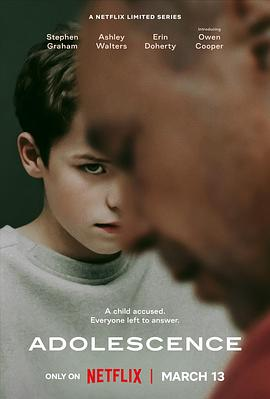

混沌少年时 第一季 / Adolescence Season 1
又名：青春期
一镜到底技术一定是有的，演员张弛有度，可惜节奏实在拖沓，倒是完整展现了被捕后的种种事项。（剧情还是不太吸引人。看的时候总在考虑这是怎么拍出来的。_(:з」∠)_）（不好看，但拍摄手法值得借鉴。）
作品信息
| 导演 | 菲利普·巴兰蒂尼 |
| 编剧 | 杰克·索恩 / 斯蒂芬·格拉汉姆 |
| 主演 | 斯蒂芬·格拉汉姆 / 欧文·库珀 / 艾琳·多尔蒂 / 克里斯汀·特雷马科 / 阿什利·沃尔特斯 / 费伊·马赛 / 阿梅莉·皮斯 / 乔·哈特利 / 比迪·艾瑞戴尔 / 奥斯汀·海恩斯 / 塔金德·辛格·查纳 / 道格拉斯·罗素 / 罗比·欧尼尔 / 凯恩·戴维斯 / 克劳迪乌斯·彼得斯 / 利亚姆·霍金斯-芬尼根 / 刘易斯·彭伯顿 / 阿玛里·巴克斯 / 卡亚·穆尔 / 安妮·霍恩比 |
| 类型 | 剧情 / 悬疑 / 惊悚 / 犯罪 |
| 制片国家/地区 | 英国 |
| 语言 | 英语 |
| 首播 | 2025-03-13(英国) |
| 季数 | 1 |
| 集数 | 4 |
| 单集片长 | 60分钟 |
| IMDb | tt31806037 |
说过什么
2025-03-30 16:30:56
广播 · 看过 · ★★★★☆
一镜到底技术一定是有的，演员张弛有度，可惜节奏实在拖沓，倒是完整展现了被捕后的种种事项。（剧情还是不太吸引人。看的时候总在考虑这是怎么拍出来的。_(:з」∠)_）（不好看，但拍摄手法值得借鉴。）
2025-03-28 22:09:33
广播 · 在看 · ★★★★☆
一镜到底技术一定是有的，演员张弛有度，可惜节奏实在拖沓，倒是完整展现了被捕后的种种事项。
最后一次看到是 2026-10-07T23:13:39+08:00 · 豆瓣原页